About AzoreanArt and Pieter Adriaans
Welcome to AzoreanArt, the online home of Pieter Adriaans, a distinguished artist whose work is deeply intertwined with his personal life and the breathtaking landscapes of São Jorge in the Azores. Pieter's creations are unique, with each piece reflecting his profound connection to the isolated island he calls home.

Pieter Adriaans values the personal nature of art transactions, viewing them as intimate exchanges between individuals. As such, his artworks are not available through any galleries or other channels. The only way to acquire a piece of Pieter's art is by visiting his studio, "De Kaasfabriek," in Santo António, São Jorge, or by reaching out to us via this website. We facilitate a direct connection between you and Pieter or one of his assistants, ensuring a personalized and meaningful experience.
Explore our site to discover the limited selection of Pieter's artworks available for purchase and learn more about his creative journey. Should you find a piece that resonates with you, don't hesitate to contact us to discuss your interest.